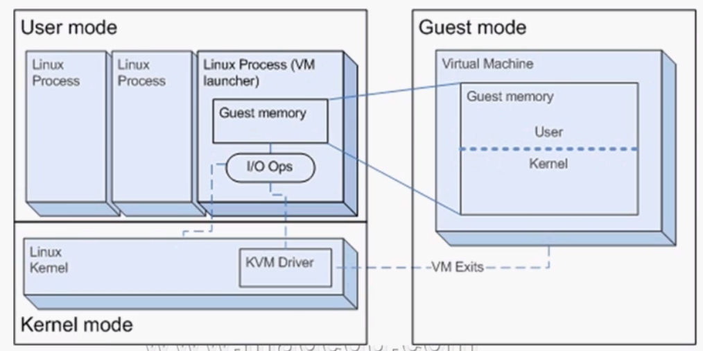

kvm依赖qemu，所以是完全虚拟化
KVM 架构：基于内核的虚拟机，是内核一个模块,直接调度硬件资源，所以比Xen性能更高。只支持硬件虚拟化的CPU、64位平台上。一台虚拟机就是内核上一个进程。
kvm+qemu架构
/usr/libexec/qemu-kvm
modprobe kvm 安装KVM模块

包组
virtualization qemu-kvm
virtualization client virt-manager ,virt-viewer
virtualization platform libvirt,virt-who,virt-what
virtualization tool virt-v2v
kvm三模块
内核模式 包括kvm.ko模块、/dev/kvm或者qemu-kvm 内核与虚拟机交互的API，可以管理、创建、删除虚拟机，内核中断。
用户模式 包括虚拟机进程
来宾模式 进程内的虚拟机
常用管理工具
libvirtd,qemu,
virsh uri 查看虚拟机连接路径
virsh create 建完后，自动启动
virsh start 开机
virsh suspend 挂起
virsh resume 继续挂起的
virsh save 保存虚拟机状态到文件
virsh restore 从文件恢复到虚拟机状态
virsh reset 直接重启
virsh reboot 重启
virsh migrate 迁移
virsh console 连接到客户机';
virsh detach-disk 卸载硬盘
virsh detach -interface 卸载网络接口
virt-top
virsh iface-bridge ens33 br0 桥接
开启网络桥接
systemctl start libvirtd 启动自动生产nat模型的桥
virsh iface-bridge ens33 br0 开启网桥后需要配置vr0的IP地址
创建硬盘文件
qemu-img create -f raw /kvm/vm1/test.img 10G
losetup -f 查看loop空闲设备
losetup /dev/loop0 /kvm/vm1/test.img 映射loop 设备 应该是相当于 mount -o loop
kpartx -av /dev/loop0 挂载img文件成硬件设备
fdisk /dev/loop0
创建虚拟机
virt-install --connect qemu:///system --virt-type qemu --name centos6.5 --ram 512 --disk path=/test.img,size=3 --graphics vnc --cdrom /tmp/CentOS-6.5-x86_64-minimal.iso --network bridge=br0 --chech all=off 或者 --check path_in_use=off
/usr/libexec/qemu-kvm -m 8000 -smp 2 -boot order=c -hdb /opt/Data/b4f74446-18bf-42e9-a2d9-e0a1a1bf8f4b/images/24e31c1f-5085-48fa-8b87-37437bfaf056/a4da8009-f0d7-4ec5-9b71-6862037b7ae7 -vnc :2
删除虚拟机
virsh undefine test
cd /etc/libvrit/qemu/ rm删除掉虚拟机的xml文件